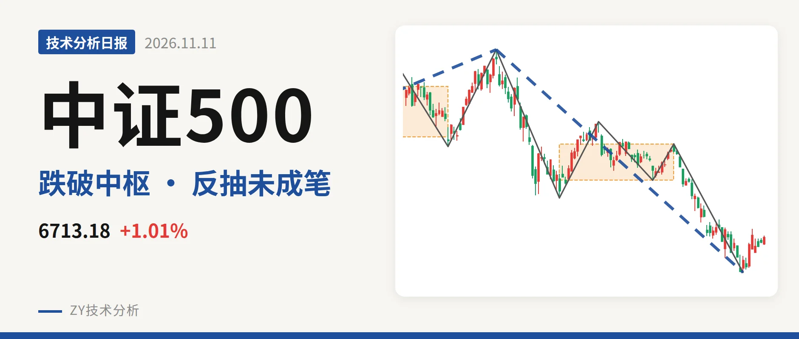
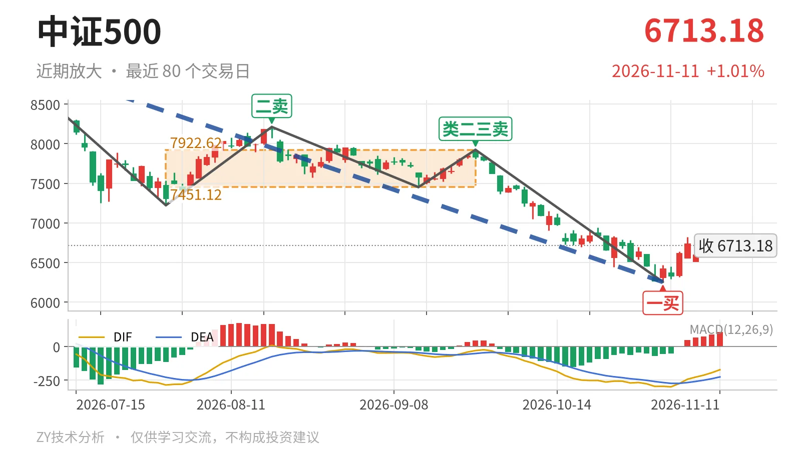

中证500｜反弹未成笔，7451点下沿未回

最近日线中枢 7451.12—7922.62点，收盘位于中枢之下
一句话：日线下跌段未止，反抽未回中枢下沿，结构仍偏弱。
📉 走势结构：下跌段未见结束，反弹还没成笔
7月1日以来的日线下跌段没有结束，当前只是下跌中的未成笔反抽。更大级别上，7月1日以来的下跌段还在延续，最新价6713.18点已回到2025年11月24日线段三买6797.50点下方，说明该三买失守。日线线段上，7月1日至11月2日的下跌段内含5笔，低点6253.79点后只走出7根K线，反弹还没构成日线一笔。从7月1日一卖9147.56点以来，日线高低点同步下移，7月30日低点7221.95点、11月2日低点6253.79点，结构上是下跌段里的弱反抽。

🧭 中枢与位置：跌破最近中枢，中枢下移
最近日线笔中枢为7月30日至9月22日的7451.12—7922.62点，最新收盘6713.18点低于下沿约9.9%。中枢从1月26日至6月8日的8014.66—8671.35点，下移到7451.12—7922.62点，属于中枢下移。11月3日以来的反抽最高6819.12点，仍离下沿7451.12点较远，价格在中枢下方运行，尚无回抽进中枢的动作。11月2日低点6253.79点已跌入2022年4月27日至2023年8月4日的线段中枢5594.30—6263.16点内部。
🎯 买卖点：卖点一个比一个低，一买后还没成笔
日线笔级卖点7月1日一卖9147.56点、8月18日二卖8211.31点、9月22日类二三卖7922.62点，位置一个比一个低，说明下跌结构没有被扭转。11月2日一买6253.79点后，最低6292.31点高于一买，一买尚未被破坏，但反弹没有形成日线笔，力度有限。线段级2025年11月24日三买6797.50点已被跌破，价格回到该三买下方，上涨结构进一步弱化。

⚖️ 背驰：绿柱收缩，但DIF低点继续下移
同向下跌笔对比：7月1日至7月30日下跌笔绿柱面积2687，DIF低点-285.2；9月22日至11月2日下跌笔绿柱面积1782，DIF低点-295.6。价格新低，绿柱面积收缩，但DIF低点仍在下移，不是标准的“新低不新弱”。按缠论，这种面积收缩、DIF未转强的背驰，通常只带小级别反弹。最新DIF仍在零轴下方，柱值106.2，反抽仍属零轴下修复。
🔍 关键位置观察：反抽能否回7451点一线
当前结构偏弱。反抽若回不到7451点一线，后续回落结构上构成对7月30日至9月22日中枢的三卖，日线下跌段延续。重新站上7923点一线，则7月1日以来的下跌更可能只是中枢扩展，转入震荡。若回落跌破6254点附近，11月2日一买被破坏，价格将进入5594.30—6263.16点的线段中枢内部。整体未出现转震荡确认信号。
⚠️ 本文为基于公开行情数据的缠论技术结构记录，由程序自动计算并生成，仅供学习交流，不构成任何投资建议。市场有风险，投资需谨慎。